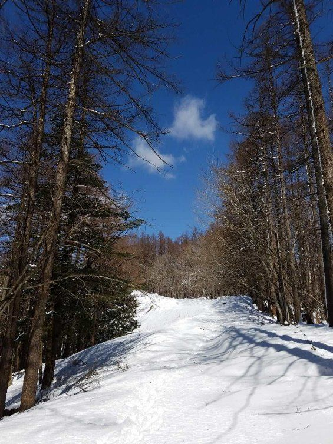

| 百名山ピークハント Vol.1: Episode 001-005 (The BBB: Breakthrough Bandwagon Books) | |
| 穂高 | |
| The BBB: Breakthrough Bandwagon Books (2017) | |
Japanese 100 Great Mountains Vol.1: Episode 001-005 ( Jp )
（邦題『百名山ピークハント Vol.1: Episode 001-005 』）
Originally written in Japanese and translated by Hodaka
Photographs by Hodaka
Cover design by Tanya
Copyright © 2017 Hodaka / The BBB: Breakthrough Bandwagon Books
All rights reserved.
ISBN: 978-1-387-39823-2
Episode 001 : 雲取山
雲取山 （くもとりさん） は東京、埼玉、山梨にまたがる東京都 の最高峰（標高 2,017m ）で 、日本百名山のひとつです。関東からのアクセスがいい為、年間を通じて多くのハイカーで賑わいます。
山頂までのルートは東京都・山梨県側と埼玉県側に大別され、様々なコースがありますが、どこを起点として登ってもコースタイムが長く、健脚者でなければ日帰りは難しいと言われています。今回はアクセスの良い山梨県側の鴨沢から山頂を目指すことにします。
東京都の奥多 摩湖を過ぎるとすぐに、鴨沢のバス停から山道を上がったところに 60 台程の駐車場があります。平日ということもあって数台しか停まっておらず、いつものように車で着替えをして、パッキングをします。軽い準備体操をして、 7 時前には出発。天気も良好で快適な登山が期待出来そうです。

山頂までは標準コースタイムで約５時間。距離は結構ありますが、特に危険な箇所はなく、なだらかな樹林帯を登っていきます。途中から登山道にうっすらと雪が見え始め、次第に数十センチ積もる雪道に変わってきました。例年４月中旬頃までは残雪があり、登る前にもウェブの最新情報でまだ雪があると分かっていましたが、前の晩にかなり降ったようで、思った以上に積もっていました。
持ってきたアイゼンを使うタイミングを見ながら雪道を登っていきます。途中長くて退屈なコースが続きますが、頂上までラスト１時間程は展望が開けて左手に富士山が見えるので最高の稜線歩きを楽しみ、山頂を目指します。
ゆっくりと登り始めても５時間程で、頂上に避難小屋が見えてきます。緩やかな坂を登りきったところにある小屋からの眺めは最高です。奥多摩の山々、南アルプス、八ヶ岳が眺望できます。そして、ここは東京都から見える絶好の富士山ビュースポットでもあります。この日、富士山は霞んでしまいましたが、夕焼け 、朝焼けの時は綺麗に見えることを期待します。山小屋からさらに 50 ｍ 程進むと雲取山の頂上にたどり着きます。この雲取山の標高は 2,017 m で今年の西暦と同じということもあり、メディアでも取り上げられたり、山岳雑誌にも特集されたり今年注目されている山でもあります。西暦の書かれた新しい記念碑が建てられていました。
何年か前に雲取山 に登ったときは日帰りだった為、山頂でゆっくり出来ませんでした。 今回は雪で下山に時間がかかりそうなことや、ゆっくり写真も撮りたいので、雲取山荘に一泊するつもりでいました。
夕日までは数時間もあったので、いったん頂上から樹林帯を 30 分ほど下った場所にある雲取山荘まで向かうことにしました。ところが、ここからの雪が膝ぐらいまであって、予想以上に時間がかかりました。たまにトレースを見失い、不安になりながらも何とか雲取山荘に辿り着くことが出来ました。
雲取山荘は 200 人収容できる大きな山小屋で、東京都と埼玉県の県境に位置しています。通常は 相部屋で使用するのですが、この日は平日ということもあり宿泊者は 3 人だけで、ひとり 1 部屋が割り当てられ、贅沢にスペースを使うことが出来ました。
山小屋を利用するにあたっては、確実に泊まることが決まっていれば事前に予約を入れますが、予約をしていなくても当日でも宿泊することは 可能です。食事付きか素泊まりかで料金は異なってきますが、相場は 1 泊 2 食付きで 8 千円から 9 千円程です。お金はかかりますが、食事が出て布団で寝られて快適に過ごせる為、山小屋で泊まることは登山の楽しみのひとつです。
さて、宿泊の手続きを済ませ、 8 畳程の部屋を ひとり で使うことになったのですが、部屋に入ると中央にこたつが置かれていました。冷えた体をこたつで暖めて、しばらく休みました。余裕が あれば夕焼けを撮りにまた山頂まで登ろうとも思いましたが、夕食は 6 時からで往復の時間を考えると少し厳しいので諦めました。
夕食はハンバーグで、宿泊者 3 人で今日の登山や山の話をしながら楽しく食事をとりました。食後も談話スペースで山の話が続きますが、このような共通の話題で 盛り上がれるのも山小屋ならでは の 魅力です。山小屋の夜は早く、 20 時には消灯となります。
翌日の朝食は 5 時と朝も早 いです。山頂から下ってきた急な雪道を登るのを心配しながら 3 人で食事をしました。食事を終えて早々に準備をします。
日の出時間は 5 時半過ぎで、山頂から見る予定でしたが間に合いそうもないので、山小屋から見ることにしました。結構雲がかかっていまし たが、雲の隙間から太陽が現れて綺麗に見えました。気温はマイナス 5 度でしたが、それほど寒さを感じません。
この日はアイゼンを付けて登るため、登山靴に装着しました。おかげで登りの雪道は問題なく登ることが出来ました。雲がかかっていたので、山頂からの富士山が映えなかったのが残念でしたが、雪山と山小屋でのひとときを楽しめた登山となりました。
ところで、雲取山に登る途中に、七ツ石山と呼ばれる山があり、 10 世紀の伝説的な武将である平将門にまつわるエピソードが伝えられています。戦で敗れ、この山に立て籠もった将門は６人の影武者を連れており、将門が討たれた時に影武者もろとも７つの石になった、というのが山の名前の由来だそうです。
Episode 002 : 筑波山
筑波山 （つくばさん） は関東平野の東に位置し、男体山と女体山というふたつの峰があります。標高は 877m で百名山の中で最も低い山 ですが、茨城県のシンボルのひとつとなっています。主な 登山口は筑波山神社と つつじ ヶ 丘の 2 つあ り 、どちらから で も 標準タイムで 2 時間とかからずに山頂に辿り着けるので、 シーズン中は幅広い年代 の登山者で賑わいます。また、筑波山神社からはケーブルカー が 、 つつじ ヶ 丘 からはロープウェイ が出ていて簡単に 山頂まで 行けるので、人気がある山です。
数年前に筑波山神社の登山口から登ったことがあったので、今回は初めて つつじヶ 丘の登山口から登ることにしました。夜中の 3 時頃に家を出て、高速道路を利用し、 5 時頃には つつじヶ 丘の登山口に到着しました。駐車場には約 260 台駐車できますが、まだ数台しか停まっておらず、 5 時半には登り始めました。ここの登山口からは、まずは女体山を目指すことになります。日中はかなりの登山客で混み合いますが、この時間はほとんど登っている人はいません。 5 時半だと既にだいぶ明るく、天気は晴れていましたが、午後には崩れる予報が出ていたので、足早に山頂を目指します。
登山道は多少岩場がありますが、危険な個所はなく、早いペースで登って行けます。 30 分程で弁慶茶屋という筑波山神社からの登山道と合流する広場に到着します。ここから女体山の頂上までは多くの奇岩が現れてきます。日中は多くの登山客で写真も撮りづらいですが、この時間帯は人も少なく、様々なアングルから落ち着いて写真を撮ることができました。
弁慶茶屋から 30 分程で山頂が見えてきます。祠を通り過ぎれば、女体山の山頂に到着です。登り始めてまだ１時間ちょっとしか経っておらず、疲れは全く感じません。
標高は低いですが、この頂上からの展望は非常に素晴らしくて、関東平野が一望できます。高度感もかなりあり、頂上は崖のようになっているのですが、それ程広くはないので登山客が多いときは十分に気を付ける必要があります。
女体山の山頂に立つと 、 もう ひとつ の峰である男体山はすぐ近くに見えます。女体山から緩やかな坂を下って行くと 御幸ヶ原 と呼ばれる土産物屋や食堂が並ぶ大きな広場に出ます。ここはケーブルカーの山頂駅にもなっていて、賑やかな場所です。ここから男体山までは 15 分程で登頂できます。男体山の標高は 871 m で女体山とそれ程変わりませんが、こちらの山頂の展望はあまり開けていないので、祠にお参りだけしてすぐ下山しました。
筑波山は奇岩が有名な山で、登山中に不思議な形の岩や 10 ｍを超える巨石がいくつも見られます。これらの岩には名前があり、神話や歴史と関わっていて、どれも神秘的に感じられます。以下にいくつか奇岩を紹介します。
■弁慶七戻り
猛者と恐れられた弁慶でさえ、頭上の岩が今にも落ちてきそうで 7 回戻ったと言われています。今に至るまで落ちてこなかったのが不思議です。
■母の胎内くぐり
岩を母の胎内に見立て、この岩をくぐり抜けることで生まれた姿に立ち返ることを意味した奇岩です。実際に試してみましたが、大人だとくぐり抜けるのは一苦労でした。
■出船入船
石の姿がまるで出てゆく船と入ってくる船が並んでいるように見えることから 、 この名が付きました。航海の安全を願う船玉神を祀っています。
■高天原（たかまがはら）
神々が住む高天原の名前が付けられている岩で、階段の先には 天照大神（あまてらすおおみかみ）を祀る稲村神社があります。
筑波山は他にもこのような奇岩がいくつもあるので、見どころが多く楽しみながら登ることが出来ます。
頂上付近の 御幸ヶ原で 自然研究路を 1 時間程、歩いて下山しましたが、まだ午前中で天気も良かったので、車で 10 分程の筑波山神社に向かいました。この筑波山神社は茨城県を代表するパワースポットとしても知られています。
筑波山は男体山・女体山からなる双耳の山頂で、それぞれイザナギ（夫 / 兄神）とイザナミ（妻 / 妹神）の 神を祀っています。
この二神が山頂の天浮橋（あめのうきはし）と呼ばれる橋に立ち、手にした鉾の先から滴を垂らすと、それが日本の国になったと古事記に記されています。
そして、結婚した後、神々を産み、国産みをされたことから、筑波山神社は縁結び、夫婦和合、家内安全、子授けなどのご利益があると言われています。
また、この神社で祈祷された石を持って、頂上付近にある「大石重ね」と呼ばれる特定の場所に、その石を積むと願いが叶うと言われています。
入り口から境内は非常に広く、階段を登り、いくつかの門をくぐって、ようやく本殿に至ります。この神社から山頂を目指す登山者が登る前に祈願していく姿が多く見られます。
Episode 003 : 丹沢山
これまで何度か訪れたことのある丹沢に行ってきました。丹沢は神奈川県西北部の山塊の総称であり、神奈川県の約 6 分の 1 を占めるほど広範囲に渡っています。
百名山登頂のガイドラインとしてはその山塊の中で一番高い山頂を登ることと言われているので、今回は丹沢の中の最高峰である蛭ヶ岳（ 1,673m ）を目指しました。
丹沢は電車とバスの交通のアクセスもよく、頂上からの見晴らしがいい為、非常に人気のある山です。丹沢の主な登山口としてはヤビツ峠と大倉が一般的で、蛭ヶ岳を目指すには塔ノ岳、丹沢山を超えていく必要があります。前回はヤビツ峠から登ったので、今回は大倉から登ることにしました。 1 日で 9 時間以上は歩く予定なので、朝 4 時半に大倉に到着し、 5 時 頃 登り始めました。
10 分程車道を歩くと登山道が現われ、本格的に山に入っていきます。この大倉からの登山道は木の階段があり、よく整備されていて危険な箇所はありませんが、ひたすらゆるやかで長い登りが続くので、別名「バカ尾根」とも呼ばれています。こう呼ばれるのも分かる気がする程、本当に長く、果てが見えない階段を見る度に意気消沈しそうになります。途中に山小屋がいくつかあるので、あせらず休みながら登っていきます。
しばらく登り続けて振り返ると、はるか向こうまで海が見渡せるので癒されます。もし、曇りで何も見えない状態だったら、と考えるだけでぞっとします。
頂上までのラスト 1km 近くは少し急な登りになります。大倉を登り始めて３時間半近くか かって 、ようやく塔ノ岳の頂上（ 1,491m ）に辿りつきました。大倉からの標高差は約 1,200m にもなります。頂上は開けていて、相模湾、富士山、南アルプスも一望できるので、これまでの疲れは一気に吹き飛ぶことでしょう。
山小屋の前には塔ノ岳の大きな山頂標識があり、周囲は広範囲に木製の段差が設置されているので、混雑を気にせず食事や休憩をすることが出来ます。
食事を取りながらゆっくり休んで、次は丹沢の最高峰となる蛭ヶ岳を目指します。ここからは登山客もだいぶ減って登りやすく感じますが、これまでの疲れもあるので焦らずマイペースで登っていきます。
１時間ちょっとで丹沢山の山頂（ 1,567m ）に到着します。ここは開けた場所になっていますが、 周囲を木に囲まれ眺めは良く ありません。そして、少し休んで再び蛭ヶ岳を目指します。
蛭ヶ岳の山頂と山小屋は途中で登山道からはっきり見えます。アップダウンを繰り返してようやく到着しました。 1,673m の蛭ヶ岳の山頂は丹沢最高峰で すが、登山客も少なく塔ノ岳ほど賑わっていません。日帰りだと時間が厳しいので塔ノ岳で満足する人が多いのだと思います。
蛭ヶ岳の登頂は健脚の人であれば日帰りでも行けなくはないですが、今回は塔ノ岳にある尊仏山荘という山小屋に泊まると決めていました。それは、以前、雲取山荘で出会った登山客にここの山小屋の良さを聞いていたからです （ Episode 001 参照） 。まず、山小屋からの眺望がいいので、夜は街の夜景が素晴らしく、これを目的に泊まる人も多いそうです。それから、ここの山小屋の食事は、夕食はカレーライス、朝食はおでんと決まっているので、そこにも魅力を感じました。これまで山小屋でおでんを食べたことはありません。
山小屋の名前は、山頂にかつてあった尊仏岩という巨岩にちなんでいるそうですが、今は山小屋の前に小さな仏の像が並んでいます。また、 150 人収容 出来ますが、今回も土日を外して泊まったので、自分を含めてソロの登山客 3 人と 1 4 人程のパーティー だけでした。そして部屋も貸し切り状態で使うことが出来ました。
1 泊 2 食付きで 6,500 円なのでかなりリーズナブルだと思いました。夕食は 17 時半からで、相席の机で山の話をしながら食べました。しっかりと煮込んだカレーが染み渡り、おかわりが自由なのも嬉しいです。
だんだん暗くなってくると、街の明かりが徐々に付き始めます。 1 9 時半頃、だいぶ暗くなって外に出ると、そこには想像以上に素晴らしい夜景が広がっていました。空は雲が出てきて星は見えませんでしたが、その代わりに夜景を楽しむことが出来、いつまでも飽きることなく見ていました。
翌日は 14 人のパーティーの騒がしい声で目を覚ましました。空がだいぶ明るく日の出寸前で、山小屋の窓越しに雲の隙間から登ってくる日の出が綺麗に見えました。外に出ると、昨日はほとんど見えなかった富士山が目の前に雄大に見えて感動しました。太陽が徐々に高 くなってくると、街や海の色が変わってくるのがよく分かりました。
5 時 半頃 、 朝食のおでんをいただきま す 。 味もよく染みていて、朝からおでんというのも体が温まっていいものだと思いました。
ところで、今回、丹沢に来たのは猫に会いたかったという理由もあります。以前、尊仏山荘で捨て猫を保護して 18 年もの間、スタッフや登山客に愛されてきた「みーくん」という猫がいました。残念ながら 2016 年に亡くなってしまったそうですが、雲取山荘で遭った登山客から今は、塔ノ岳の頂上に「塔くん」という野良猫がいると聞きました。ネット上でも多くの登山客がその猫の写真をアップしていて、ふっくらした体型と、ふてぶてしい顔つきが可愛らしく、頂上で会えるのを楽しみにしていました。しかし、「塔くん」の姿はどこにもなく不安が過ぎりましたが、山小屋のスタッフに聞くと、 3 月下旬頃に誰かが引き取り、今は元気に飼われているそうで安心しました。
丹沢といえば歩荷 （ぼっか） でも有名な山です。歩荷とは背中に食料や生活用品を背負い、山小屋に荷揚げをする人のことです。平均重量で 70 ～ 80kg の荷物を運び、ベテランの歩荷にもなると 100kg 以上の荷物を運ぶ こともあ ります。
たまたまこの日は登山口の大倉から塔ノ岳の途中にある山小屋の区間で歩荷の駅伝大会を行っていました。このような大会があるのも知らず、駅伝がスタートする頃には既に頂上にいたので実際のレースは見られませんでしたが、途中の中継地点などで関係者と話すことができました。１チーム４人構成で参加し、規定の重さの荷物を背負いながら、リレー形式でゴール地点まで運び所要時間を競う大会で、下山後に You T ube で過去の大会の様子を視聴しました。普通に登るだけでもきついのに、なんという過酷なレースでしょう。
この丹沢には「チャンプ」と呼ばれる有名な歩荷がいて、塔ノ岳に 5 , 500 回登頂したとして今年の 1 月に新聞にも紹介されました。まだ現役で歩荷をしているようなので、運が良ければ遭遇出来るでしょう。
山小屋で快適に過ごせるのも歩荷のおかげだと改めて感じ た登山となりました。
Episode 004 : 天城山
天城山は伊豆半島の中央部に位置する山塊の総称で、そこに天城峠から最高峰の万三郎岳を経て天城高原ゴルフ場まで続く縦走路があります。登頂だけが目的なら天城高原ゴルフ場から往復約 4 時間で比較的簡単に達成できますが、今回は 標高 600m の天城峠から標高 1,406m の万三郎岳 を目指し、ゴールとなる 天城高原ゴルフ場まで の全長 17km の縦走路を歩いてきました。 5 時半頃、天城峠に到着すると、車は 1 台も停まっていません でした。当初は最高峰の万三郎岳まで登って往復するつもりでしたが、 スタート直後に林道でいきなり道に迷ってしまい 30 分程時間をロスしてしまいました。その後は道も整備されて順調に進めましたが、出だしは本当に分かりにくかったです。
天城山は展望が望めない山としても知られています。ブナの原生林が直射日光を遮ってくれるのですが、この日は気温が 30 度以上あり、朝 7 時前でも汗がポタポタ垂れ落ち てきます 。
緩やかな登り道を２時間も歩くと八丁池へ到着し、のどかな景色を楽しみながら一息いれます。ここから１時間半ほど先の戸塚峠まではほとんどアップダウンが無く、退屈な登山道が続きますが、ペースをあげて時間を稼ぎます。
戸塚峠からは急な登りになり、１時間も進むと万三郎岳の山頂が見えてきます。晴れていれば頂上からの展望も多少ありますが、この日は頂上に着く頃にはだいぶガスが出ていて何も見えませんでした。
天城山は年間降水量が 3,000mm を超える多雨地域で、温暖な気候と相まって樹木の生息には大変適している環境 です。 5 ～ 6 月の時期はシャクナゲが見頃となり、登山道の脇にはツツジ、ブナ、ヒメシャラ、アセビ等の植物が見られ、多くの登山者がこの時期に登ります。特に万三郎岳と万二郎岳の間の馬の背と呼ばれる尾根にあるアセビのトンネルは有名です。アセビとは馬が食べるとふらつく程の毒があることから漢字では「馬酔木」と書きます。
また、ブナの原生林が広大な面積を占めているので登山中の景色は良くないですが、途中にある八丁池がビュースポットと言えるでしょう。この八丁池はモリアオガエルの生息地として有名です。モリアオガエルは水中には産卵せず、木の枝に泡で包まれた卵を産み付けるので、産卵時期には木々に多くの泡の塊が見られます。
また、途中ですれ違った登山客から「シロツバキを見なかった？」と聞かれました。ツバキは上を向いたまま花が落ちるので、このシロツバキが一面に落ちるスポットがあるそうで、それを見に来たようです。
登山中はずっと虫やセミの鳴き声が大音量で聞こえてきて、多くの植物もあり、自然の豊かさを実感できます。また、万二郎岳からの下山中に突如後ろから鹿が飛び跳ねて追い越して行きました。あまりに突然過ぎて写真を撮る間もありませんでしたが、天城山には非常に多くの鹿が生息しているそうです。
天城峠から頂上の万三郎岳までの約 5 時間は誰にも会わずに、ひとり で登ってい ました。万三郎岳で休憩して、そろそろ出発しようとしたときに、ひとり の男性が登ってきました。「今日はじめて人に会った」と話しかけてきたので、「私も です 」と答え、しばらくベンチに座ってお互いに話しました。
60 代ぐらいのこの男性はなんと昨日、山口県から車で約 900km 運転してきたそうで す。そして、 百名山達成まであと 17 座で、これから約一カ月で 百名山の未踏の山を 含めて 30 座 に 登る計画をしてい ました。 予定表を見せてもらいましたが、 ほとんど 毎日どこかの山に登っている という過密な計画に驚きと感動を覚えました 。
話は尽きず、「万二郎岳まで一緒に行きましょう」と言われたので、それから約１時間はこれまで登った山の話や日本各地の話を聞いて楽しいひとときを過ごせました。これまでにざっと 1 ,000 座は登っており、北海道や九州の百名山にも複数回登っていて、後は関東方面のみで、この夏に終わらせようということで、どんどん話に引き込まれていきました。
万二郎岳でお昼を食べながら登山以外の話もしました。この男性は剣道七段の腕前で、６回目の審査でようやく合格したそうです。 10 回以上落ちることも珍しくない、非常に難しい試験のようです。剣道八段にもなると合格率が１％程度で、日本で行われる試験で最も合格が難しいと言われているそうです。
登っている最中、万三郎岳からこのまま約 4 時間 近くかけて 同じ道を戻るのも面白みがない ので 、縦走路のゴール 地点である天城高原ゴルフ場 まで行き、 そこから交通 機関 を利用して伊豆半島を海沿いに 戻ろうかと思いつきました。
剣士の男性と別れた後、約１時間で天城高原ゴルフ場に到着しました。天城縦走路のゴールです。前に天城山に登った際にここに来たことはありましたが、ゴルフ場のフロントに入るのは初めて です。「これから天城峠まで交通機関を使って戻りたいのですが...... 」と聞くと、フロントの女性は驚いていましたが、他のスタッフの方々も親切に調べてくれて、バス、電車、タクシーで戻るタイムスケジュールを組みました。ただ、あまり一般的ではないようでした。 15 時過ぎのバスまでカフェでゆっくりと過ごし、伊東駅に向かうバスからは道路わきの林で野生のシカを見ることが出来ました。そして、伊東駅から伊豆急行に乗り、河津駅に向かいますが、天気も良くて綺麗な海を眺めることが出来ました。さらに河津駅からはタクシーでマイカーの停めてある天城峠まで向かいます。タクシーの運転手に「（有名な観光スポットである）河津七滝は見たか？」と聞かれたので、「今日は天城山を縦走して、これから東京に帰るところです」と言うと、帰り道にある別の滝スポットを紹介してくれました。
朝は登山客もほとんどいなく、黙々と頂上までを 往復するつもりでいましたが、多くの人と関わった登山となりました。
天城山といえば、ノーベル賞作家・川端康成の「伊豆の踊子」が 有名で 、 天城峠や河津駅には記念碑もあります。
また、松本清張の「天城越え」の舞台にもなっているところです。映画の「天城越え」はまだ観たことがなかったので、登山する数日前に鑑賞しました。この作品の中で天城峠にある氷室に犯人の手がかりとなる裸足の足跡の話が出てきますが、その氷室が実際にありました。昭和初期ごろ、冬の天城山の酷寒を利用して人工的に天然氷を製造して、この氷室に貯蔵していました。映画の中では犯人が潜んでいたことを思い出すと、薄暗いその空間を少し不気味に感じました。
前回、天城山に来たときは特段調べることもなくただ頂上を目指して登りましたが、今回は 17km の縦走を堪能し、 人との 出会いもあり、 天城山に 関わる文芸作品も鑑賞し、非常に 印象に残る 山となりました。
世界で初めて 5 大陸最高峰を登頂した植村直己のことばを思い出します。「私は五大陸の最高峰に登ったけれど、高い山に登ったからすごいとか、厳しい岩壁を登攀したからえらい、という考え方にはなれない。 山登りを優劣でみてはいけないと思う。要はどんな小さなハイキング的な山であっても、登る人自身が登り終えた後も深く心に残る登山がほんとうだと思う。 」
Episode 005 : 安達太良山
東北方面に行く用事があったので、この機会に福島県にある安達太良山に登ろうと計画を立てました。安達太良山は標高 1,700m の 活火山 ですが、天気に恵まれれば登山道に危険な箇所はほとんどなく、全体として緩やかな山体で 初心者 向けの山といえるでしょう。また、 今回利用した 奥岳登山口は福島駅から車で 4 0 分程の近さでアクセスもいいで す。
明け方、福島方面に向かって高速道路を走行中に雨が降り出してきたので今日の登山は諦めかけましたが雨も弱くなってきたので、とりあえず登山口に向かってみました。すると、徐々に晴れ間も広がり着く頃には綺麗な青空が広がっていました。
この奥岳登山口は 、 数百台は 駐車出来 そうな 相当 な 広 さ ですが、この日は数台しか停まっていませんでした。 車で着替え 、パッキングなどの 準備をしていると、 隣に 老夫婦が 車を停めた ので 挨拶をして出発しました。 同じ山に複数回登るのも新しい発見があっていいのですが、今回のように 初めて登る山は ワクワク します。
登山口からは川沿いに整備されている遊歩道があり、少し遠回りになりますが、せっかくなのでこちらの遊歩道を歩くことにしました。森 の中 を小川が流れ、その川沿いに上流に向かって歩いて行くのですが、いくつかの 滝 を見ながら涼しい道を進んで行きます。この遊歩道をショートカットすることも出来ますが、心地よいウォーミングアップにもなるのでまずはここを歩くことをお薦めます。 1km 程で遊歩道は終わり、そこからは緩やかで遠回りの馬車道と直登する近道の登山道が交差しながら頂上に向かっていきます。
平坦な砂利道や藪の中の急な登山道を進みながら山頂を目指していると、道の両脇に色々な花が見え始めたので、写真を撮りながらゆっくりとしたペースで登って行きます。

しばらくすると、硫黄のにおいが漂ってきました。ここ安達太良山は活火山でも知られていて、今も火山ガスが噴出しており一部のコースが通行禁止となっています。 1997 年には 登山者 が 視界 が 悪いため 立入禁止 区域 に立ち入ってしまい 、 4 名 が火山 ガスの吸入により 死亡するという事故も起きています。
安達太良山の中腹に差し掛かると温泉付きで有名なくろがね小屋が見えてきました。小屋の先は、火山特有のゴツゴツとした岩が散乱する登山道が幅広く広がり、岩には登山道を示すマークが書かれています。道は歩きにくいので、小股で一歩一歩登っていきます。登山道とは分かりにくいほど道が広いので、濃霧で視界が悪かったらマークを見失って遭難する可能性もあります。この日 は 見晴らし は 良かったですが、炎天下の中登っていたのでかなり疲労も増してきました。
砂利道は続いて、ようやく開けた分岐点に出ると岩山が目に入り、その前に安達太良山と書かれた標識が見えました。この岩場の上が安達太良山の頂上になります。
岩場を登って行くと、数分で頂上に辿り着きます。頂上からは 360 度見渡すことが出来る絶景です。この時期は頂上付近に怖い程のトンボの大群がいましたが、人には寄ってこないので特に害はありません。
この岩場で 、 駐車場で挨拶した老夫婦がお昼を食べていたので話かけてみました。彼ら は 遊歩道 は 行かずに、登山道もショートカットの道で登ってきたようです。そして、ここから 少し先に ある鉄山に行くことを勧められたので、片道 45 分ほど掛けて向かいました。そこに行く途中に巨大な噴火口が見えて思わず感嘆の声を上げました。 白くなった山肌と 、大きな火口は とても迫力があり、その スケールに圧倒されました。朝、老夫婦と挨拶して い なかったら頂上でも話さなかったと思うので、この景色は見 ることが出来なかった かもしれません。
再び、安達太良山へ戻ると少し雨が降ってきたので、少し足早に下山を始めます。しばらくすると晴天になりましたが、下山はロープウェイを利用することにしました。この安達太良山はロープウェイがあり、十分程で快適に移動出来るので、気軽に登ることが出来るのも魅力です。
安達太良山は花の百名山としても知られていて、この時期も登山中に非常に多くの花が見られました。花には詳しくないですが目に入ってくる花を次々と写真に撮っていきました。これまで花にはあまり興味がなかったのですが、これだけ咲いていると名前や特徴を知りたくなってきました。
花以外にも安達太良山の魅力はいくつもあって、高村光太郎の「智恵子抄」や古くは万葉集にも詠まれ、多くの人々に親しまれてきたことでも分かります。
そして、なんといってもこの安達太良山のお勧めは温泉です。私が登った奥岳登山口には駐車場のすぐ横に温泉施設があるという絶好の立地で、下山後すぐに汗を流すことができます。この日は登山客も少なくて、しばらく待てば貸し切り状態で独占して満喫できました。

この岳温泉は坂上田村麻呂が東征の折に発見したといわれる温泉で、古くは水戸黄門もその効能を称賛したとも言われています。安達太良山の他の登山コースにも温泉があって、疲れた体をゆっくり休めることが出来ます。
今回、初めて登った安達太良山は 、 山容は穏やかですが、登ってみると岩場や噴火口など変化に富んでおり花や温泉といった楽しみもあって、お気に入りの山のひとつとなりました。
***
より多くの写真を添えた登山記録は、以下の著者ブログでお読みいただけます。
http://hodakaclimber.blog.fc2.com
***
（本書は、 The BBB: Breakthrough Bandwagon Books のために書き下ろされたオリジナル作品です）